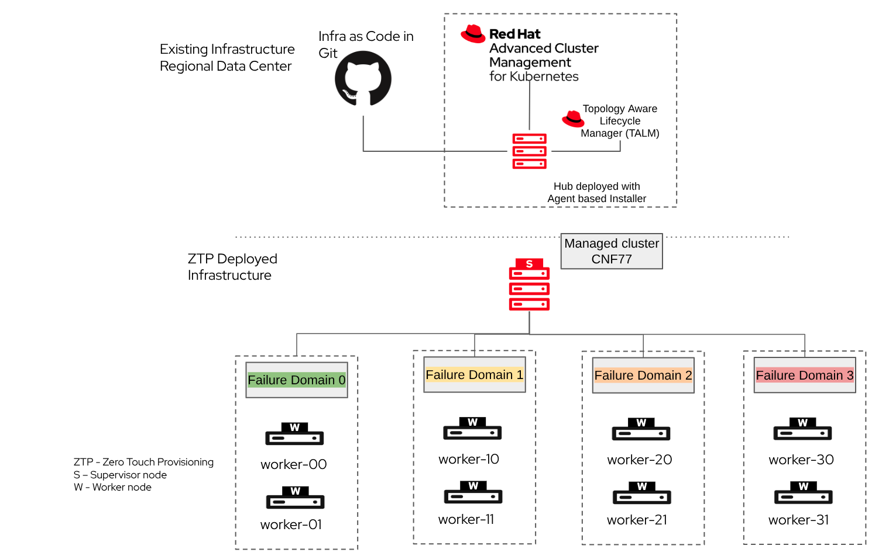

Introduction to Multi-Node OpenShift (MNO)
Multi-Node OpenShift (MNO) is the standard, highly-available OpenShift topology: a cluster composed of three or more control plane nodes and a variable number of worker nodes. This is the only supported cluster topology in the Telco Core Reference Design Specification (RDS). Unlike 5G RAN deployments — where edge constraints justify running a Single Node OpenShift — Telco Core workloads (signaling, session management, user-plane functions) require full high availability. There is no compact or single-node variant for Core.
Telco Core Cluster Topology
A Telco Core MNO cluster follows the standard OpenShift HA topology with additional worker node segmentation driven by workload requirements:
-
3 control plane nodes — provide a highly-available etcd cluster, Kubernetes API server, and scheduler.
-
Worker nodes grouped into MachineConfigPools (MCPs) — worker nodes are labeled and grouped by hardware profile or workload type. For example, nodes running DPDK-based UPF workloads belong to a different MCP than nodes running signaling control-plane functions.
-
One PerformanceProfile per MCP — each MCP is bound to exactly one
PerformanceProfileCR, which defines tuning configuration specific to that workload class. -
Failure domain-based topology — each MCP maps to a distinct failure domain (via
topology.kubernetes.io/zonelabels), enabling the scheduler to spread pod replicas automatically across failure domains and allowing all nodes in a failure domain to be upgraded simultaneously.
The following diagram illustrates a typical Telco Core MNO cluster layout:

Differences from a Standard OCP Cluster
A Telco Core MNO cluster is not a vanilla OpenShift installation. It differs from a standard OCP cluster in several important ways:
-
Node-level performance tuning — workers are configured through
PerformanceProfileCRs (managed by the Node Tuning Operator) to enable CPU pinning, huge pages pre-allocation, and IRQ affinity. These settings are not part of a default OCP deployment. -
Mandatory operator stack — the Telco Core RDS requires a specific set of operators to be installed and configured: SR-IOV Network Operator, Node Tuning Operator, MetalLB Operator, NMState Operator, and OpenShift Data Foundation (ODF). Each operator is validated as part of the RDS.
-
Dual-stack IPv4/IPv6 networking — all Telco Core clusters must run in dual-stack mode (IPv4 primary, IPv6 secondary) with OVN-Kubernetes as the mandatory network plugin.
-
Fully disconnected operation — Telco Core clusters are expected to operate with no access to the public internet at any point in the cluster lifecycle. All images and artifacts are served from a local disconnected registry.
-
Bonded and VLAN-tagged interfaces — the primary NIC configuration uses an IEEE 802.3ad LACP bond with VLAN interfaces on top, which is not typical in a standard OCP deployment.
Minimum Requirements
Unlike the Telco RAN DU RDS — which targets a fixed edge hardware profile — the Telco Core RDS does not define absolute minimum hardware sizes for individual nodes. Sizing is workload-dependent: the validated reference configuration for CPU requirements targets a scale of 3000 pods, but actual requirements vary with the number and type of CNFs deployed. Refer to the official RDS documentation for the full hardware and software requirements.
The OpenShift Container Platform minimum resource requirements define the absolute floor for any cluster to boot and function:
| A separate bootstrap machine is only required for IPI/UPI installations. The Agent Based Installer (ABI) embeds the bootstrap logic into the cluster nodes themselves, so no additional bootstrap host is needed. |
| Machine | vCPU | Virtual RAM | Storage | IOPS |
|---|---|---|---|---|
Bootstrap (temporary) |
4 |
16 GB |
100 GB |
300 |
Control plane (× 3) |
4 |
16 GB |
100 GB |
300 |
Compute / Worker |
2 |
8 GB |
100 GB |
300 |
| These are absolute minimums to boot OpenShift. Telco Core production clusters running CNFs, DPDK-based UPF, or ODF storage require significantly higher resources. Sizing must be validated against your specific workload profile. |
The following additional constraints are defined by the Core RDS:
Control plane:
-
Minimum 3 nodes required for high availability (HA etcd quorum).
-
A schedulable control plane variant is supported on bare-metal nodes, allowing user workloads to run on control plane nodes to optimize hardware utilization. This must be configured at installation time.
-
Minimum 2 CPUs (4 hyper-threads when HT is enabled) per NUMA node must be reserved for OS and platform components.
Worker nodes:
-
Hardware profile is workload-driven. Nodes running DPDK-based User Plane Functions (UPF) require:
-
SR-IOV capable NICs with IRQ affinity support (hardware without IRQ affinity support must not be used)
-
NUMA-capable CPUs — validated with Intel 3rd Gen Xeon (IceLake) or later, AMD EPYC Zen 4/5, or Intel Sierra Forest
-
Dual-port NICs: one shared between the primary CNI (OVN-Kubernetes) and MACVLAN/IPVLAN traffic, one dedicated to SR-IOV VF-based pod traffic
-
-
Minimum 2 CPUs (4 hyper-threads) per NUMA node reserved for platform use; remaining CPUs available for workloads.
All nodes:
-
x86_64 CPU architecture. The Telco Core RDS validates x86_64 only. While OpenShift supports ARM64 as a general installation platform, it is not part of the Core RDS validation and is therefore not supported for Telco Core workloads.
-
Access to a local disconnected container registry (no public internet access at any point in the cluster lifecycle).
-
Static IP addresses or DHCP reservations; DNS records for API, ingress, and node hostnames.
-
Network bonding and VLAN support at the NIC/switch level (802.3ad LACP, mLAG at ToR switch).
Installation Methods
A Telco operator does not manage a single Core cluster — it manages a large fleet of Core clusters distributed across multiple regions and sites. This fleet reality fundamentally shapes how clusters should be provisioned and configured.
Zero Touch Provisioning (ZTP) via ACM and GitOps is the recommended installation method for this reason. ZTP provides:
-
A fully declarative, Git-driven workflow: the desired state of every cluster — both its installation parameters and its day-2 configuration — is stored in Git and reconciled automatically.
-
Fleet-scale management: hundreds of clusters can be deployed and upgraded from a single hub cluster using Red Hat Advanced Cluster Management (RHACM) and the Topology Aware Lifecycle Manager (TALM).
-
Consistency and repeatability: all clusters in the fleet are guaranteed to be configured to the same validated RDS baseline, eliminating configuration drift.
Other installation methods exist and are briefly described below, but they are not recommended for managing a fleet:
-
Web-based Assisted Installer — suitable for installing individual clusters via a GUI wizard at Red Hat OpenShift Cluster Manager. It does not scale to fleet management.
-
Agent Based Installer (ABI) — generates a bootable ISO from a declarative configuration; no additional servers or infrastructure are required for the install process. Suitable for disconnected bare-metal deployments. Like IPI/UPI, it does not provide ongoing lifecycle management or fleet automation. See the official ABI documentation.
-
Installer-Provisioned Infrastructure (IPI) / User-Provisioned Infrastructure (UPI) — the standard OpenShift baremetal installer. Useful for one-off deployments, but requires per-cluster manual effort without GitOps tooling on top.
In this lab, ZTP is the method used throughout. The ZTP workflow, its components, and how to build a complete ZTP GitOps pipeline are covered in detail in the following sections.
Extra Information
The following references provide additional context on MNO clusters and Telco Core:
-
Telco Core Reference Design Specification (RDS) — the authoritative source for validated hardware and software configurations.
-
Red Hat Advanced Cluster Management for Kubernetes — cluster fleet management, provisioning, and policy enforcement.
-
Zero Touch Provisioning — Preparing the Hub Cluster — official ZTP documentation.
-
Telco Core RDS Overview — high-level summary of the Core reference design components and their purpose.